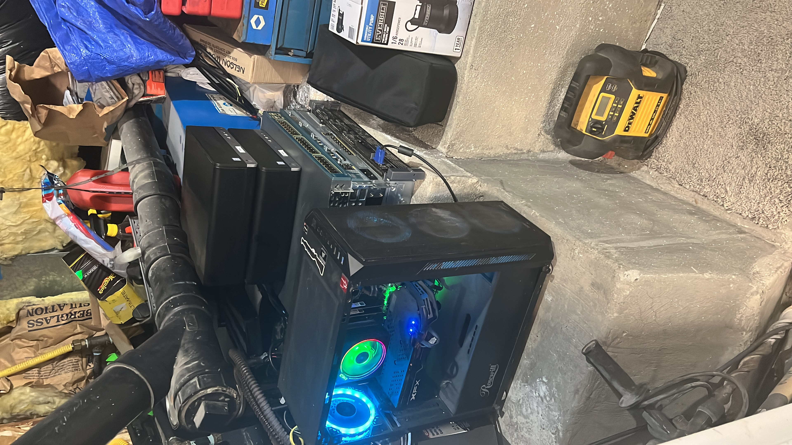
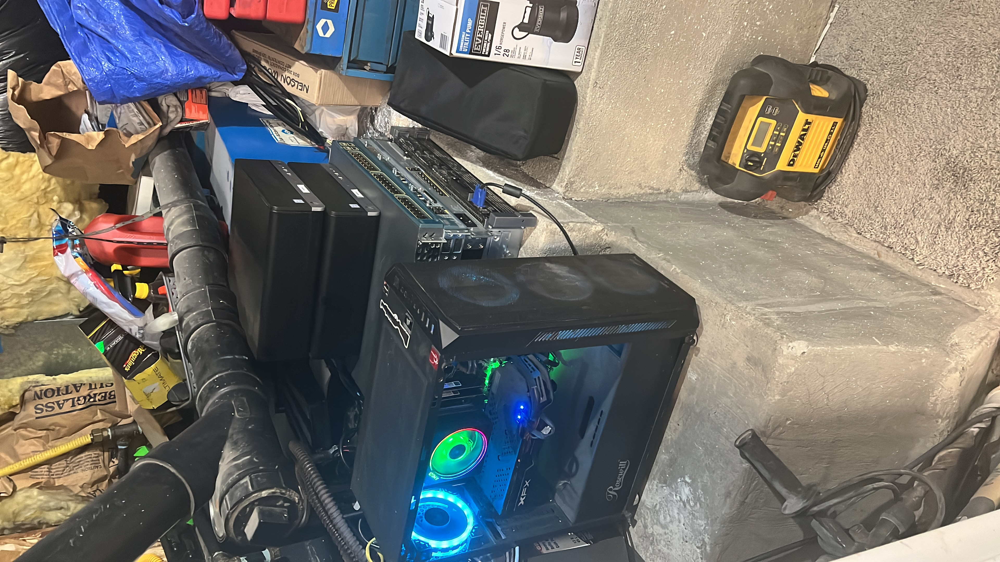

My Short-Term Goals
Right now, my biggest focus is on finishing school and maintaining good grades. I'm also working to improve my time management skills and stay consistent with my study habits. Learning more about IT systems and getting hands-on experience through projects is a huge priority for me this year.
 

My Technical Goals
I'm currently building a home lab where I can practice networking, server management, and virtualization. My goal is to learn how to set up and maintain real-world systems that companies use, so I can be job-ready right after graduation. I also plan to get certified in areas like CompTIA, Linux, or Azure.
My Long-Term Vision
Eventually, I’d love to work in aerospace or data center infrastructure - somewhere I can blend my love of hardware with high-stakes technical work. Whether I’m designing systems for satellites or maintaining enterprise servers, I want to be doing work that challenges me and helps others.